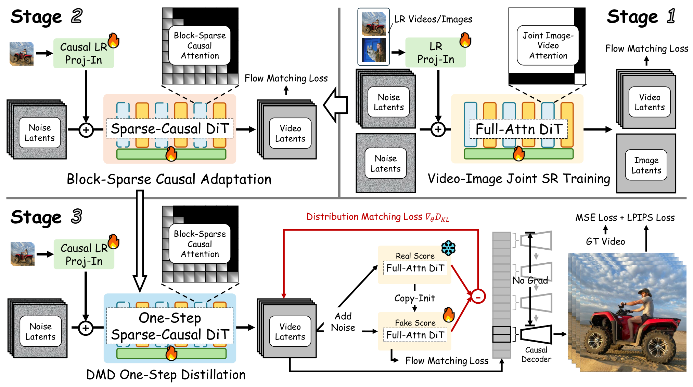
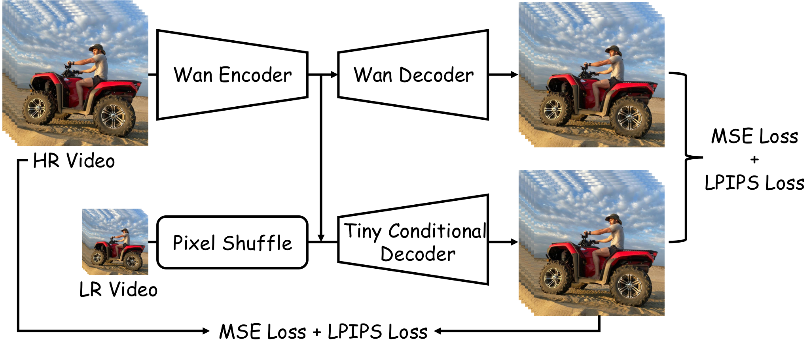
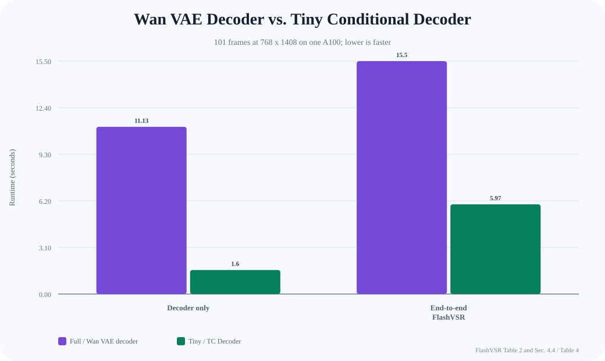
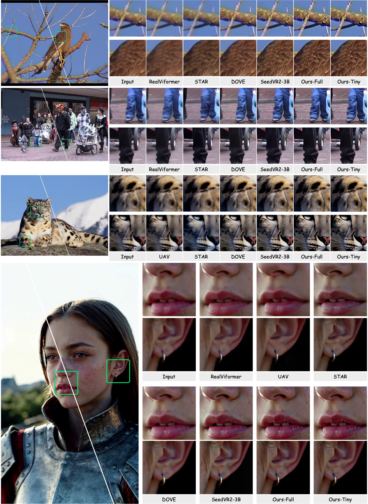

核心结论
TAEHV，论文正式名称是 Tiny Conditional Decoder；它是 decoder-only、确定性重建模块，并没有替换 Wan 的 latent 定义。方法脉络
关键证据
1. FlashVSR 到底做了什么
它把高质量离线 diffusion VSR 改造成一个一步、流式、稀疏且能扩展到高分辨率的系统。
底座是 Wan2.1-1.3B，作者用 rank-384 LoRA 在自建的 VSR-120K（120k 视频 + 180k 图像）上训练。Stage 1 用图像-视频联合 SR 获得 full-attention teacher；Stage 2 改造成 block-sparse causal DiT；Stage 3 用 distribution matching distillation 把它压成 one-step student。
稀疏注意力先在 (2,8,8) token block 上池化得到粗 attention map，只对 top-k block pair 做完整 128×128 attention；论文称 attention 计算量降到 dense baseline 的 10–20%。locality-constrained attention 还把超高分辨率推理时的相对位置范围限制在训练见过的范围内，缓解 RoPE 周期性造成的重复纹理。
系统层面，流式 causal attention + KV cache 把 lookahead 降到 8 帧；Table 2 报告 Ours-Tiny 在 101 帧、768×1408、单 A100 上为 5.97s / 16.92 FPS，相比最快的一步 baseline SeedVR2-3B 快 11.8×。

2. 先澄清名称：这里的 TAE 其实是什么
论文不把它叫 TAE，而叫 Tiny Conditional Decoder（TC Decoder）；TAEHV 是开源实现里的类名。
Wan VAE 是完整的 variational autoencoder：有 encoder 和 causal 3D decoder，latent 为 16 通道，时间压缩 4×、空间压缩 8×。但 VSR 推理阶段已有 DiT 生成的 latent，只需要 decoder；官方 Full 脚本也显式删掉 encoder。
Tiny 路径没有改变 latent 空间，也没有换更高压缩率。它保留相同 16-channel latent，再把 LR 视频按 4×8×8 邻域折叠成 768 个通道，与 latent 拼成 784 通道输入轻量 decoder。代码把操作命名为 PixelShuffle3d，但 reshape 方向实际是 space-time-to-depth / pixel-unshuffle。
因此更准确的对比是 Wan causal 3D VAE decoder vs. LR-conditioned tiny decoder，不是“完整 VAE vs. 另一个完整 autoencoder”。
| 维度 | Wan VAE decoder（Full） | TAE / TC Decoder（Tiny） |
|---|---|---|
| 输入 | 16-channel Wan latent | 同一 latent + packed LR condition（16+768 channels） |
| 时空倍率 | 4× temporal，8× spatial | 相同 4× temporal，8× spatial |
| 主算子 | CausalConv3d residual blocks + middle attention + 3D upsample | 2D Conv/MemBlock + 单帧 causal memory + 1×1 temporal grow |
| decoder 参数（代码实算） | 73.30M | 45.34M（少 38.1%） |
| 训练目标 | 预训练 Wan VAE 重建目标 | 对 GT 与 Wan decoder teacher 同时做 L2 + LPIPS |
| 推理角色 | 仅从 latent 恢复全部像素信息 | LR 给低频/结构锚点，latent 主要补高频与细节 |

3. 为什么它能加速：不是更激进压缩，而是条件捷径 + 更便宜的算子
SR 的输入本来就包含场景内容；把 LR 直接送到 decoder，相当于不用再让一个大 3D VAE 从 16-channel latent 独立重建整幅视频。
- 任务被简化。 LR 帧已经给出颜色、轮廓、运动和低频内容；TC Decoder 只需融合 DiT latent 所携带的高频补全，而不是从 latent 重建一切。条件 ablation 支持这一点：相同参数预算下，conditional 版本全面优于 unconditional tiny decoder。
- 3D dense computation 被替换。 Wan decoder 的主干是 causal 3D convolution、3D temporal upsample 和一个 attention block；TC Decoder 主要在每个时间片上跑 2D Conv，跨帧只缓存前一时刻特征，时间扩展用 1×1 Conv + reshape。高分辨率 activation 的成本因此显著降低。
- decoder-only 且可流式。 Tiny 脚本不加载
Wan2.1_VAE.pth，decode_video(..., parallel=False)逐时刻执行并保持 O(1) 时序 memory；峰值显存从 18.33GB 降到 11.13GB。 - 参数减少是辅助因素，不是全部解释。 decoder 参数仅从 73.30M 降到 45.34M，但 3D activation、attention 和高分辨率中间特征的减少才更能解释近 7× runtime 差异。
Amdahl 定律核算

4. 速度换来了多少质量损失
论文强调视觉质量接近，但重建指标显示这是一个明确的速度—保真度折中。
Table 4 在 200 个未见视频上先用同一个 Wan encoder 压缩，再分别用三种 decoder 重建。TC Decoder 相比 Wan decoder：PSNR 32.58→31.08（-1.50dB）、SSIM 0.9417→0.9244（-0.0173）、LPIPS 0.0715→0.1014（+0.0299，越低越好）。因此“without sacrificing quality”应理解为作者认为视觉差异可接受，而非数值完全等价。
另一方面，LR 条件确实有效：相对 unconditional tiny variant，TC Decoder 的 PSNR +1.12dB、SSIM +0.0165、LPIPS -0.0217。这个 ablation 能支持“LR shortcut 让小 decoder 更有表达效率”；但论文没有逐项消融 2D Conv、memory block、attention removal 各自贡献。
| Decoder | PSNR ↑ | SSIM ↑ | LPIPS ↓ | 101 帧解码时间 |
|---|---|---|---|---|
| Wan Decoder | 32.58 | 0.9417 | 0.0715 | 11.13s |
| TC Decoder | 31.08 | 0.9244 | 0.1014 | 1.60s |
| Unconditional Tiny | 29.96 | 0.9079 | 0.1231 | 未报告 |

5. 官方代码怎样落地这套设计
代码与论文主叙事一致，同时暴露出几个有助于理解性能的实现细节。
按当前开源代码直接实例化并计数，Wan Decoder3d 为 73,295,331 参数，TC Decoder 为 45,338,371 参数，差值 27,956,960，恰好对应论文 Table 2 中 Ours-Full 1780.14M 与 Ours-Tiny 1752.18M 的 27.96M 总参数差。
值得注意的是，TAEHV 的 docstring 写着 “Tiny AutoEncoder for Hunyuan Video”，但 FlashVSR 实际用的是 Wan latent，并把类扩成 784-channel conditional decoder。这更像复用过来的实现命名，不能据此把方法理解为 Hunyuan VAE。
| 论文概念 | 代码证据 | 含义 |
|---|---|---|
| Tiny decoder 取 latent + LR | TAEHV.decode_video() 先 pixel_shuffle(cond) 再与 latent concat | LR 被直接折叠到 latent 网格，形成 16+768 channels |
| 轻量 causal temporal modeling | MemBlock(x, past) + 两级 TGrow(stride=2) | 主计算是 2D Conv；用缓存和 1×1 Conv 表达跨帧关系 |
| Wan decoder 作为 Full baseline | Full 脚本加载 Wan2.1_VAE.pth 并删除 encoder | 实验比较的是 decoder 替换，而非 encoder 编码速度 |
| Tiny 路径 | Tiny 脚本只加载 diffusion checkpoint + TCDecoder.ckpt | Wan VAE checkpoint 不进入 Tiny 推理路径 |
| stream decoding | decode_video(..., parallel=False, cond=LQ_video) | 逐时刻执行，复用 causal memory，降低峰值 activation |
6. 如何看待这项工作
FlashVSR 的亮点不是单纯把网络剪小，而是重新定位一步扩散之后真正的系统瓶颈，并用 SR 特有的条件信息消除它。
- 方法价值： 当 diffusion steps 被蒸馏到 1 后，优化重点从 DiT 迁移到 decoder；论文用 profile 数据而不是直觉找到了 70% bottleneck。
- 设计价值： 通用生成 VAE decoder 必须从 latent 生成全部像素，SR decoder 却可以合法地直接访问 LR observation。这是 task-specific conditional decoding 的典型收益。
- 部署价值： 16.92 FPS 与 8-frame lookahead 已接近在线处理，但 17 FPS 仍低于常见 24/30 FPS 实时播放；论文更准确的措辞是 near real-time。
- 可迁移启示： 图像/视频 restoration、codec enhancement、refinement 等已有观测输入的任务，都值得测试“保留 latent 生成器 + 条件 tiny decoder”的架构。
局限与开放问题
- 论文没有报告 TC Decoder 与 Wan decoder 的 FLOPs、kernel-level profile 或逐层 runtime，本文对“2D Conv / activation / attention removal”的归因是基于官方代码结构与总体时延的分析，不是作者完成的逐项消融。
- Table 4 的 decoder 重建实验使用 Wan encoder 产生的 latent；这与 FlashVSR 的 DiT-predicted latent 不完全同分布，不能单独代表最终 VSR 感知质量。
- 17 FPS 在单张 A100、特定 768×1408 分辨率与 101 帧设置下测得；硬件、视频长度、稀疏率、local range、颜色校正和 tiling 均可能影响真实吞吐。
- 当前官方仓库 main 已包含 v1.1 入口；本报告的方法结论以 arXiv:2510.12747 的原始 FlashVSR 论文为准，代码结构审计固定在 commit 0d403ee。
证据与推断边界
- 作者明确报告：原 VAE decoder 约占 70% runtime；TC Decoder 11.13s→1.60s；Ours-Full 15.50s→Ours-Tiny 5.97s；Table 4 指标如上。
- 代码直接证实：Tiny 路径将 packed LR 与 latent concat，使用 2D MemBlock/TGrow，且不加载 Wan VAE checkpoint；参数数目由固定 commit 的模型定义实算。
- 分析性推断：LR 提供低频/结构捷径、2D activation 与 causal memory 是 7×加速的主要机制。论文只消融了 conditional vs unconditional，没有把这些内部因素逐项隔离。
- “TAE”不是论文正式缩写；报告沿用用户叫法，并以论文的 TC Decoder 和代码的 TAEHV 对齐。
来源与版本
论文证据来自 arXiv:2510.12747 HTML；代码证据来自 OpenImagingLab/FlashVSR main commit 0d403ee（2026-10-16）。参数量为按该 commit 模型定义本地实例化计数；未运行 GPU benchmark。
- FlashVSR paper (arXiv HTML) — 方法、表格、附录与原始图
- FlashVSR project page — 项目摘要、模型与代码入口
- Official GitHub repository — 官方实现
- Audited code revision — 代码审计固定版本
- TC Decoder implementation — TAEHV、pixel packing、MemBlock 与 TGrow
- Tiny inference entrypoint — Tiny checkpoint 与 784-channel decoder 配置